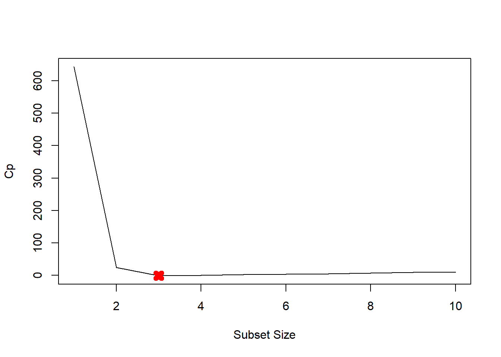
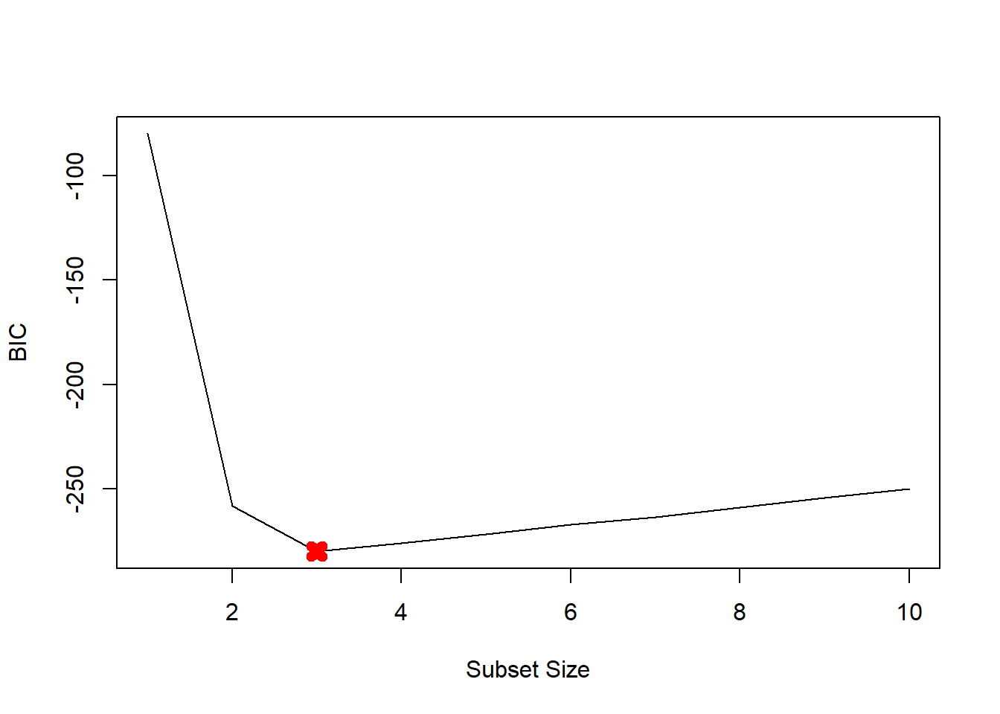
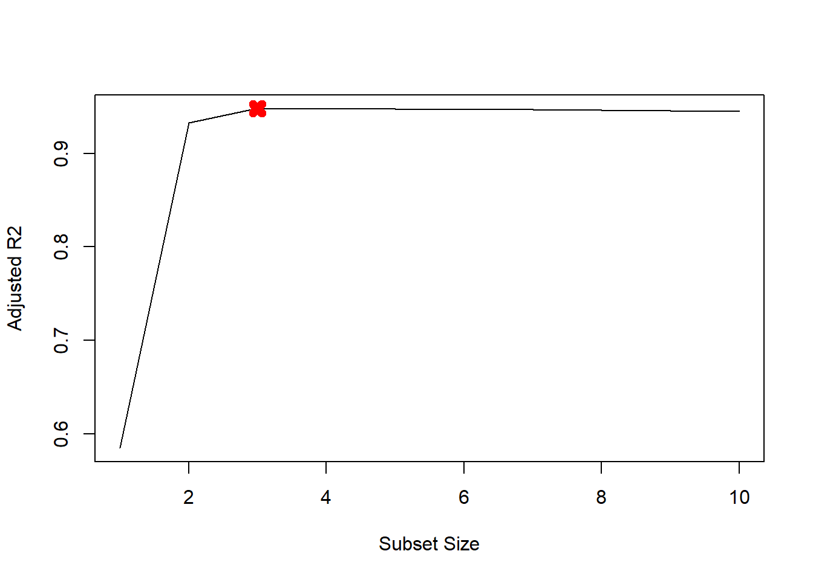
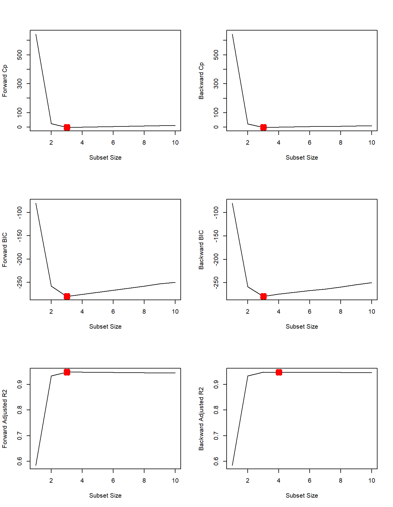
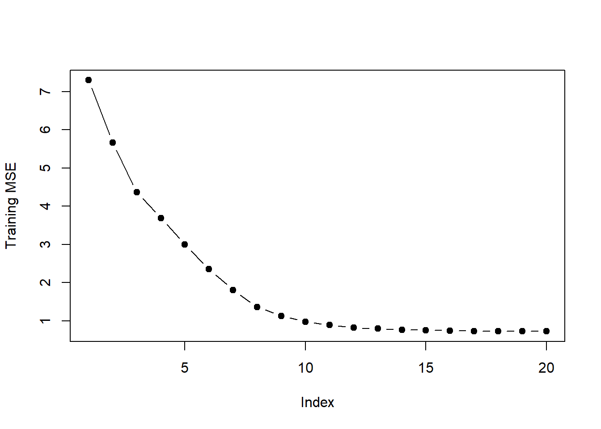
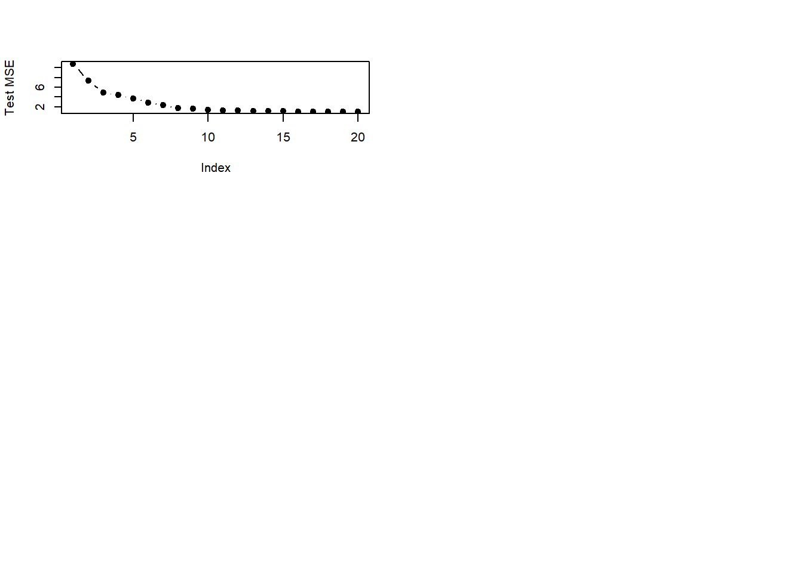

rnorm() function to generate a predictor \(X\) of length \(n=100\), as well as a noise vector \(\epsilon\) of length \(n=100\).set.seed(1)
X <- rnorm(100)
eps <- rnorm(100)We are selecting \(\beta_{0}=3\), \(\beta_{1}=2\), \(\beta_{2}=-3\), and \(\beta_{3}=0.3\).
y_hat <- 3 + 2 * X + -3 * X^2 + .3 * X^3 + epsregsubsets() function to perform best subset selection in order to choose the best model containing the predictors \(X,X^2,\ldots,X^{10}\). What is the best model obtained according to \(C_{p}\), \(BIC\), and adjusted \(R^2\) Show some plots to provide evidence for your answer, and report the coefficients of the best model obtained. Note you will need to use the data.frame() function to create a single data set containing both \(X\) and \(Y\).In the \(poly()\) function we set the argument \(raw=TRUE\). This uses the raw polynomials. Otherwise orthogonal polynomials are used. Orthogonal polynomials are usually preferrable because they solve the problem that higher orders of \(X\) are highly correlated. In addition, they keep the numbers from growing astronomically. One downside is that they are somewhat abstract. We know the true data generating process and thus the true coefficients. We want to compare the our estimates to those values. Thus, we do not want to use orthogonal polynomials.
library(leaps)
data.full <- data.frame("y" = y_hat, "x" = X)
mod.full <- regsubsets(y ~ poly(x, 10, raw=TRUE), data = data.full, nvmax = 10)
mod.summary <- summary(mod.full)
# Find the model size for best Cp, BIC and adjR2
which.min(mod.summary$cp)## [1] 3which.min(mod.summary$bic)## [1] 3which.max(mod.summary$adjr2)## [1] 3# Plot Cp, BIC and adjr2
plot(mod.summary$cp, xlab="Subset Size", ylab="Cp", pch=20, type="l")
points(3, mod.summary$cp[3], pch=4, col="red", lwd=7)
plot(mod.summary$bic, xlab="Subset Size", ylab="BIC", pch=20, type="l")
points(3, mod.summary$bic[3], pch=4, col="red", lwd=7)
plot(mod.summary$adjr2, xlab="Subset Size", ylab="Adjusted R2", pch=20, type="l")
points(3, mod.summary$adjr2[3], pch=4, col="red", lwd=7)
We find that with Cp, BIC and Adjusted R2 criteria, 3, 3, and 3 variable models are picked respectively.
coefficients(mod.full, id=3)## (Intercept) poly(x, 10, raw = TRUE)1 poly(x, 10, raw = TRUE)2
## 3.07627412 2.35623596 -3.16514887
## poly(x, 10, raw = TRUE)7
## 0.01046843All statistics pick \(X^7\) over \(X^3\). The remaining coefficients are quite close to the true \(\beta\)s.
We fit forward and backward stepwise models to the data.
# forward
mod.fwd <- regsubsets(y ~ poly(x, 10, raw=TRUE),
data = data.full, nvmax = 10,
method="forward")
# backward
mod.bwd <- regsubsets(y ~ poly(x, 10, raw=TRUE),
data = data.full, nvmax=10,
method="backward")
fwd.summary <- summary(mod.fwd)
bwd.summary <- summary(mod.bwd)
which.min(fwd.summary$cp)## [1] 3which.min(bwd.summary$cp)## [1] 3which.min(fwd.summary$bic)## [1] 3which.min(bwd.summary$bic)## [1] 3which.max(fwd.summary$adjr2)## [1] 3which.max(bwd.summary$adjr2)## [1] 3# Plot the statistics
par(mfrow=c(3, 2))
plot(fwd.summary$cp, xlab="Subset Size", ylab="Forward Cp", pch=20, type="l")
points(3, fwd.summary$cp[3], pch=4, col="red", lwd=7)
plot(bwd.summary$cp, xlab="Subset Size", ylab="Backward Cp", pch=20, type="l")
points(3, bwd.summary$cp[3], pch=4, col="red", lwd=7)
plot(fwd.summary$bic, xlab="Subset Size", ylab="Forward BIC", pch=20, type="l")
points(3, fwd.summary$bic[3], pch=4, col="red", lwd=7)
plot(bwd.summary$bic, xlab="Subset Size", ylab="Backward BIC", pch=20, type="l")
points(3, bwd.summary$bic[3], pch=4, col="red", lwd=7)
plot(fwd.summary$adjr2, xlab="Subset Size", ylab="Forward Adjusted R2", pch=20, type="l")
points(3, fwd.summary$adjr2[3], pch=4, col="red", lwd=7)
plot(bwd.summary$adjr2, xlab="Subset Size", ylab="Backward Adjusted R2", pch=20, type="l")
points(4, bwd.summary$adjr2[4], pch=4, col="red", lwd=7)
We see that all statistics pick 3 variable models except backward stepwise with adjusted R2R2. Here are the coefficients
coefficients(mod.fwd, id=3)## (Intercept) poly(x, 10, raw = TRUE)1 poly(x, 10, raw = TRUE)2
## 3.07627412 2.35623596 -3.16514887
## poly(x, 10, raw = TRUE)7
## 0.01046843coefficients(mod.bwd, id=3)## (Intercept) poly(x, 10, raw = TRUE)1 poly(x, 10, raw = TRUE)2
## 3.078881355 2.419817953 -3.177235617
## poly(x, 10, raw = TRUE)9
## 0.001870457coefficients(mod.fwd, id=4)## (Intercept) poly(x, 10, raw = TRUE)1 poly(x, 10, raw = TRUE)2
## 3.112358625 2.369858879 -3.275726574
## poly(x, 10, raw = TRUE)4 poly(x, 10, raw = TRUE)7
## 0.027673638 0.009997134Here forward stepwise picks \(X^7\) over \(X^3\). Backward stepwise with 3 variables picks \(X^9\) while backward stepwise with 4 variables picks \(X^4\) and \(X^7\). All other coefficients are close to \(\beta\)s.
We have seen that as the number of features used in a model increases, the training error will necessarily decrease, but the test error may not. We will now explore this in a simulated data set.
set.seed(1)
p <- 20
n <- 1000
x <- matrix(rnorm(n*p), n, p)
B <- rnorm(p)
B[3] <- 0
B[4] <- 0
B[9] <- 0
B[19] <- 0
B[10] <- 0
eps <- rnorm(p)
y <- x %*% B + epstrain <- sample(seq(1000), 100, replace = FALSE)
y.train <- y[train,]
y.test <- y[-train,]
x.train <- x[train,]
x.test <- x[-train,]library(leaps)
regfit.full <- regsubsets(y ~ . ,
data = data.frame(x = x.train, y = y.train),
nvmax = p)
val.errors <- rep(NA, p)
x_cols <- colnames(x, do.NULL=FALSE, prefix="x.")
for (i in 1:p) {
coefi <- coef(regfit.full, id = i)
pred <- as.matrix(x.train[, x_cols %in% names(coefi)]) %*%
coefi[names(coefi) %in% x_cols]
val.errors[i] <- mean((y.train - pred)^2)
}
plot(val.errors, ylab = "Training MSE", pch = 19, type = "b")
val.errors <- rep(NA, p)
for (i in 1:p) {
coefi <- coef(regfit.full, id = i)
pred <- as.matrix(x.test[, x_cols %in% names(coefi)]) %*%
coefi[names(coefi) %in% x_cols]
val.errors[i] <- mean((y.test - pred)^2)
}
plot(val.errors, ylab = "Test MSE", pch = 19, type = "b")
which.min(val.errors)## [1] 1616 parameter model has the smallest test MSE.